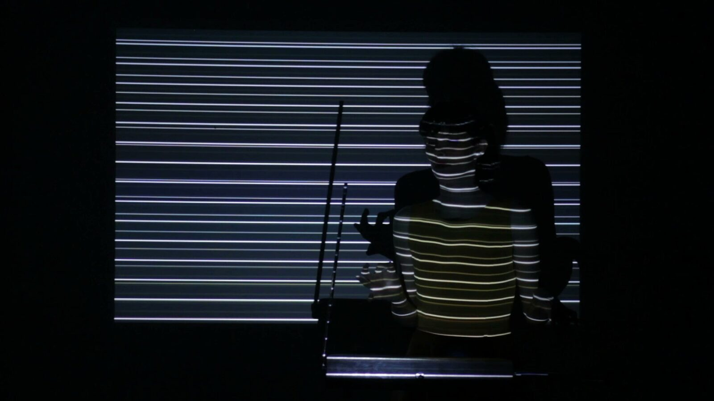
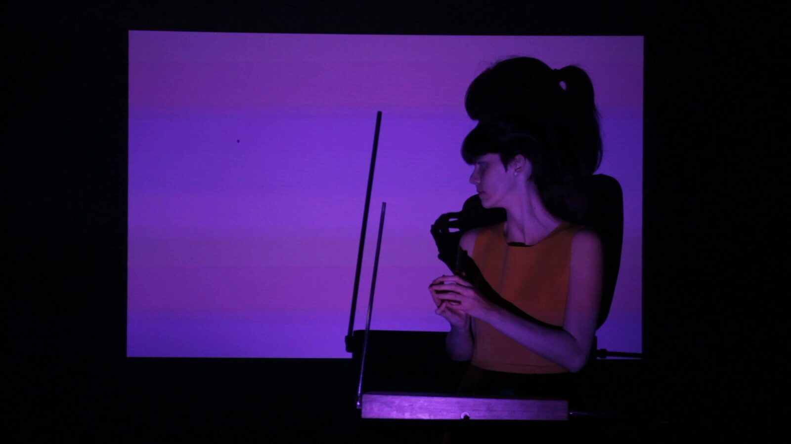
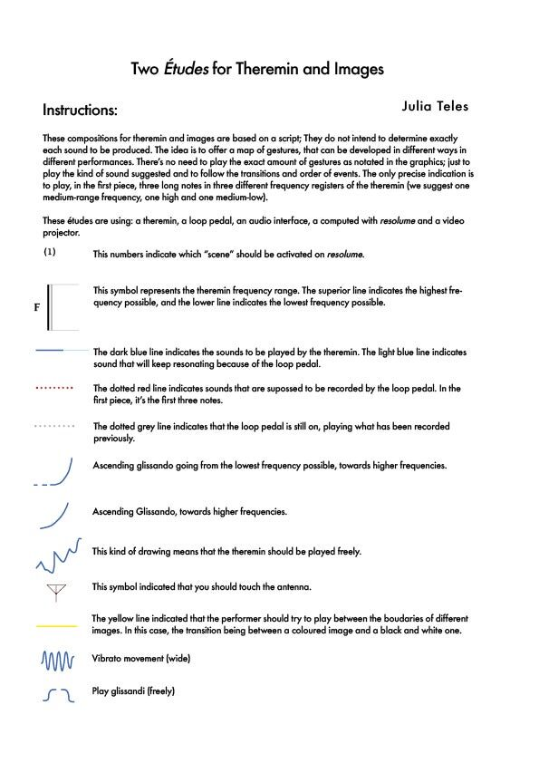
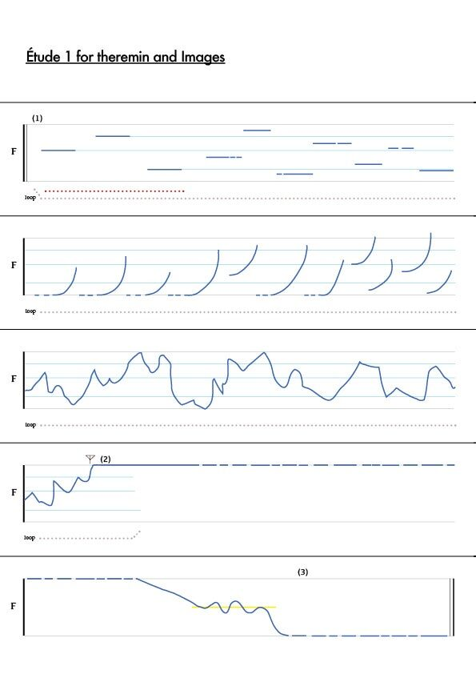
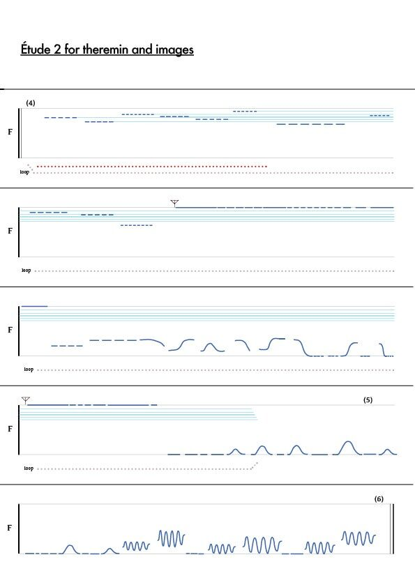
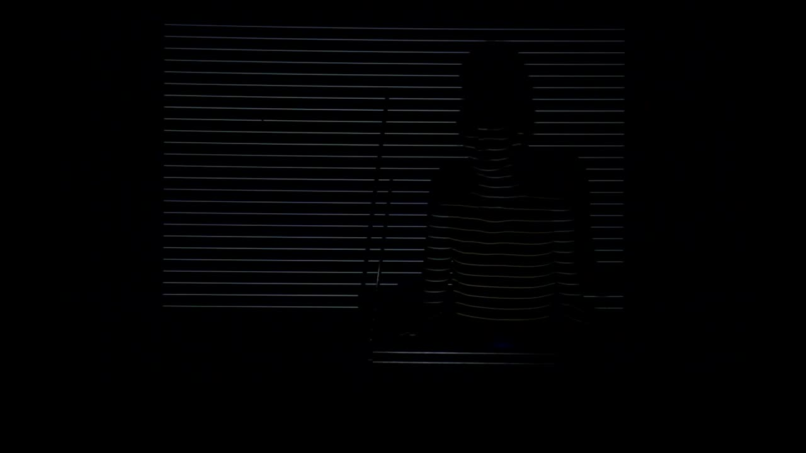

Aproximações (Approximations)
Aproximações (Approximations)
Julia Teles, graduate student (M.A.) at PUC-SP (Brazil).
1. PubPub Link
https://nime.pubpub.org/pub/3d20qfhs/draft?access=l3pj3wj0
2. Conference Abstraction
What sounds, gestures and images can we produce using a theremin? How can we write these gestures in a score, considering the specificities of the theremin (the freedom to play it in space without physical contact)? What kinds of outputs and noises are produced if we touch the antennas? What audio-visual relations could be established?
This work-in-progress research and performance will try to propose new relations between abstract sounds and abstract images, using the interaction between a body and a theremin as the only input. The performance produces music, and also visualities that are projected into the performance space, acting as lighting and scenery.
3.Requirements
This project is using the following equipment: A two-antenna theremin; a loop pedal; an audio interface with at least one input; a computer; the software Resolume; a video projector.
This work is meant to be presented on a concert stage, in galleries, and in front of academic audiences. As the current situation of the pandemic does not allow it, our recent performances have been filmed and presented online as a work-in-progress.
Performer: Julia Teles (Theremin). As the project includes writing scores and programming, the idea is to create compositions that could be played by other thereminists in the near future.
We have been doing tests and experimentations to determine what are the best choices in terms of software and programming, which ones are more viable to create good interactions. We also consider the possibility of having a partner developing the code if we feel that it is necessary.
4. Program description
The central idea of this performance and the research behind it is to create a system - via programming, using the theremin as an interface - to create audiovisual compositions. This is achieved thanks to a software that can analyze sound and transform it into digital information to control visual parameters.
It is well established that Liev Theremin who in 1920 invented the theremin – one of the first electronic instruments – was also researching visuals and their relations to sound. In 1923, he developed an instrument called illumovox, also controlled by gestures, that could control lights in real-time and in synchrony with musical performance. More information about it can be found in the book Sound in Z, by Andrei Smirnov. Taking inspiration from his efforts to have both sound and image coming from gesture, our work explores this expansion of the theremin, aiming to create and present audiovisual experiments that relate abstract sounds and abstract images, as in the early visual music aesthetics.
The gesture of playing the theremin is as old as the instrument, it is about 100 years old. As in other instruments, there are many techniques and methods for "taming" the instrument and reproducing melodies and musical phrases in tune. However, the sounds we intend to use are not necessarily melodic: we intend to approach the instrument from other perspectives, to also explore what other kinds of gestures are possible around a theremin.
5. Media






The score instructions for performance


The score for the first piece


The score for the second piece

▶A video about (and containing) the research
6. Acknowledgements
The author would like to thank and express her gratitude to NIME 2021 for selecting this project as a work-in-progress showcase. Also, a special thanks goes to Professor Marcus Vinicius Fainer Bastos who provided expert advisory, and to Luis Felipe Labaki who recorded and edited the video presented. Thanks to Luisa Teles Baptista and Mariano Mamertino who edited the English version of this text.
This graduation research is being held at TIDD, PUC-SP, in Brazil.